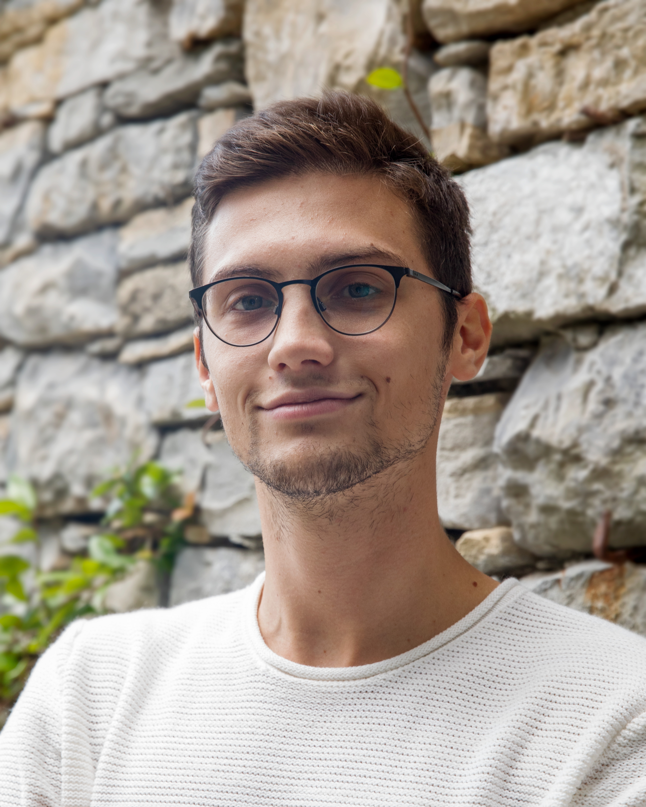

My name is Luca Vanetti, and I am a graphic designer specializing in brand identity and digital communication. I help companies and organizations build coherent and meaningful visual identities.
I started as a self-taught designer, driven by a passion for drawing that evolved over time into a broader interest in new media and visual culture. I chose to solidify this evolution academically by earning a Master’s Degree in Communication Design from the Politecnico di Milano. Having worked both as a freelancer and in corporate environments, I have collaborated with a wide range of organizations. These experiences have shaped my design methodology, which is built on two pillars: research and listening.
My toolkit includes the Adobe Suite, Figma, Blender, and TouchDesigner. In recent years, I have developed a strong interest in generative art, a field of personal research that informs and enriches my daily work. When I’m not designing, you can find me in the mountains, immersed in a history podcast, or playing video games.
Break Italia
Medical Product Research
Millemani
Modvlar
Osteopata Francesca Trivini
2023
Displaid
Communication Specialist
2020 — 2021
Enoplastic
Graphic & Product Designer
2019 — 2020
Sport & Holidays
Graphic Designer
2023
Project Exhibition @Politecnico di Milano
Miscellanea AI | AI EDU CAMP Milano Digital Week 2023
2022
Project Exhibition @Istituto dei Ciechi di Milano
Urlo muto della Terra | ControSenso
Project Exhibition @Graphic Days Torino
Urlo muto della Terra | Neologia
MuVi6 Selection @University of Granada
Pulsating Textures | VII Intern. Congress "Synaesthesia: Science & Art"
2019
Project Exhibition @BASE Milano
What makes humans human?